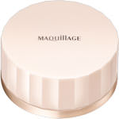
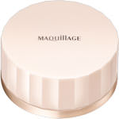

商品の特徴
磨きあげたような艶と透明感が続きます。
粉感レスで肌にとけこむルースパウダーです。
しっとり微細なパウダーが、摩擦を感じさせず肌表面に広がりフィットします。
キメまで磨かれたような艶と透明感を纏った、ワンランク上のしあがりが1日続きます。
ふんわり上質パフ付きです。
１３時間化粧もち（皮脂くずれ・くすみ・毛穴落ち・粉ふき）データ取得済みです。
（当社調べ。効果には個人差があります。）ＳＰＦ１５・ＰＡ＋
ルーセント
【使用上の注意】
・目に入らないよう注意し、入ったときはすぐに洗い流してください。
・ご使用後はキャップをきちんと閉めてください。
・携帯するときは、容器が完全に閉まっていることを確認してください。
・パフがよごれるとパウダーがつきにくくなりますので、いつも清潔にしてお使いください。
・パフがよごれたときは、別売りの「資生堂スポンジクリーナーＮ」をお使いいただくか、中性洗剤をぬるま湯にうすくとかして軽く押し洗いをします。
洗剤が残らないように十分すすいだ後、水気をきり、日かげでよく乾かしてからお使いください。
使い心地や仕上がりが悪くなった場合は、別売りの「マキアージュドラマティックルースパウダー用パフ」をお使いください。
・詰め替える際は、別売りの「マキアージュドラマティックルースパウダー（レフィル）」をお使いください。
・キャップがきちんと閉まらなくなった場合は、本体ごとお求めください。
・乳幼児の手の届かないところにおいてください。
・日のあたるところや高温・多湿のところにおかないでください。
- 成分・分量
- 【成分】
タルク、（ビニルジメチコン／メチコンシルセスキオキサン）クロスポリマー、シリカ、ホウケイ酸（Ｃａ／Ａｌ）、ミリスチン酸亜鉛、（ＨＤＩ／トリメチロールヘキシルラクトン）クロスポリマー、（ジフェニルジメチコン／ビニルジフェニルジメチコン／シルセスキオキサン）クロスポリマー、（ジメチコン／ビニルジメチコン）クロスポリマー、酸化チタン、窒化ホウ素、メトキシケイヒ酸エチルヘキシル、カルボキシデシルトリシロキサン、（メタクリル酸メチル／アクリロニトリル）コポリマー、アセチルヒアルロン酸Ｎａ、水酸化Ａｌ、ステアリン酸、塩化亜鉛、トリエトキシシリルエチルポリジメチルシロキシエチルヘキシルジメチコン、ジステアリルジモニウムクロリド、ケイ酸（Ｌｉ／Ｍｇ／Ｎａ）、ミリスチン酸Ｍｇ、アルミナ、グリセリン、（ＩＰＤＩ／ポリ（１，４－ブタンジオール）－１４）クロスポリマー、酸化亜鉛、ＢＨＴ、パルミチン酸デキストリン、イソブタン、イソペンタン、酸化スズ、クロルフェネシン、マイカ、硫酸Ｂａ、酸化鉄
- 用法及び用量
- 【使用方法】
・ファンデーションやメークの仕上げにお使いください。
・パフを中ぶたにのせた状態でしっかり押さえ、容器を上下に１回程度軽くふり、パフにパウダーを含ませます。
・ほおの高い位置にパウダーをそっとおいてから、顔の中心から外側に向かって押さえるようになじませます。
・小鼻や口のまわりなどの細かい部分は、パフを2つに折り、ていねいになじませます。
・よりつやと立体感を高めるために全体を仕上げたあと、イラストのように、額・鼻すじ・ほおの高い位置・あご先をクルクル磨くようになじませることを
おすすめします。
・紫外線防御効果のあるマキアージュの化粧下地やファンデーションなどとの併用をおすすめします。
・使用量が少ないと、十分な紫外線防御効果が得られません。
 
